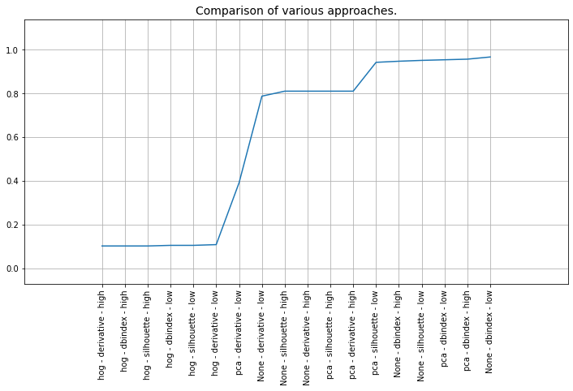
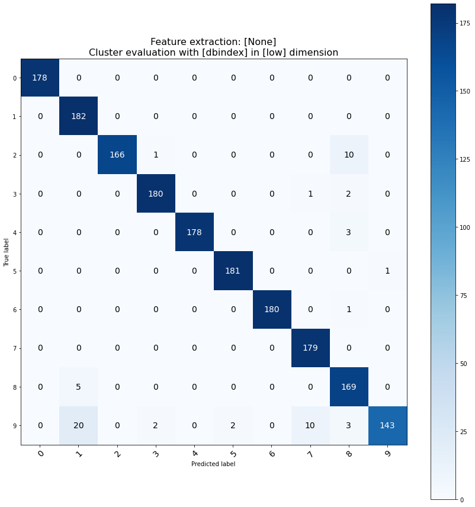
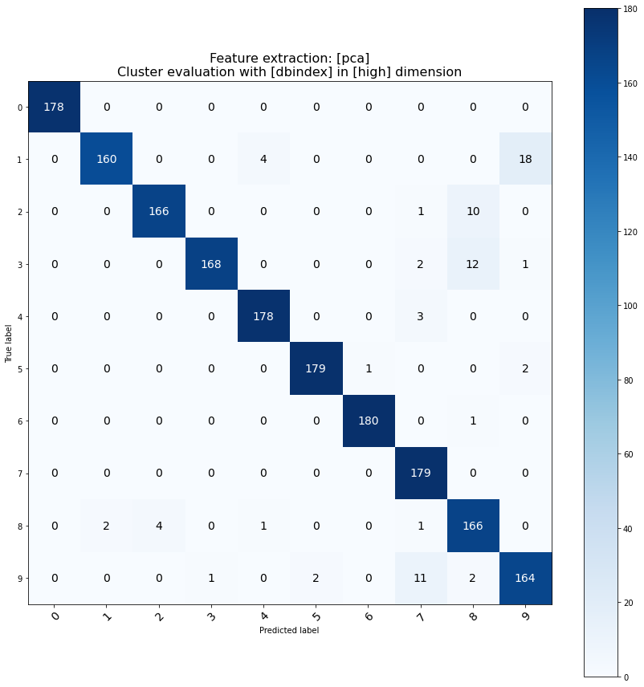

Performance
To measure the performance of various methods implementend in clustimage, we can use the digits dataset to determine the match between clustered sampels and the true label.
It can be seen that multiple different parameters still result in similar good performance based on the results below.
The following peace of code clusters the digit images, compares the detected cluster labels with the true label, and finally computes the accuracy.
import matplotlib.pyplot as plt
from sklearn.datasets import load_digits
from clustimage import Clustimage
import classeval as clf
import itertools as it
from sklearn.metrics import accuracy_score
# Load example data
digits = load_digits(n_class=10)
X, y_true = digits.data, digits.target
param_grid = {
'method':['pca', 'hog', None],
'evaluate' : ['silhouette', 'dbindex', 'derivative'],
'cluster_space' : ['low', 'high'],
}
scores = []
labels = []
allNames = param_grid.keys()
combinations = list(it.product(*(param_grid[Name] for Name in allNames)))
# Iterate over all combinations
for combination in combinations:
# Initialize
cl = Clustimage(method=combination[0])
# Preprocessing, feature extraction and cluster evaluation
results = cl.fit_transform(X, cluster_space=combination[2], evaluate=combination[1])
# Compute confmat
cm = clf.confmatrix.eval(y_true, results['labels'], normalize=False)
# Transform numbers to make it comparible
y_pred = results['labels']
cm_argmax = cm['confmat'].argmax(axis=0)
y_pred_ = np.array([cm_argmax[i] for i in y_pred])
# Compute again confmat
cm = clf.confmatrix.eval(y_true, y_pred_, normalize=False)
fig,ax = clf.confmatrix.plot(cm)
ax.set_title('Feature extraction: [%s]\nCluster evaluation with [%s] in [%s] dimension' %(combination[0], combination[1], combination[2]), fontsize=16)
plt.pause(0.1)
# Store scores and labels
scores.append(accuracy_score(y_true,y_pred_))
labels.append(str(combination[0]) + ' - ' + combination[1] + ' - ' + combination[2])
# Make plot
import numpy as np
scores=np.array(scores)
labels=np.array(labels)
isort=np.argsort(scores)
plt.figure(figsize=(12,6))
plt.plot(np.arange(0,len(scores)), scores[isort])
plt.xticks(np.arange(0,len(scores)), labels[isort], rotation='vertical')
plt.margins(0.2)
plt.title("Comparison of various approaches.", fontsize=14)
plt.grid(True)
 |
 |
 |